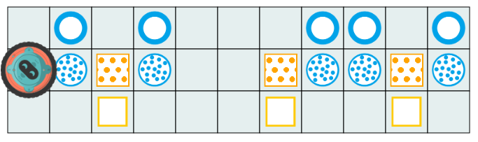
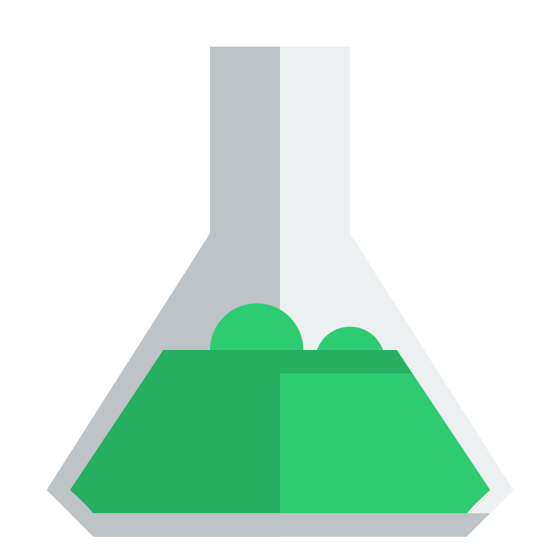
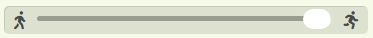

Bei der Zubereitung eines Hexentranks müssen die Zutaten , ,

, , in der richtigen Anzahl und der richtigen Reihenfolge in den Kessel gegeben werden.Der Roboter soll Hexe Fibonacci helfen und von rechts nach links jeweils genau eine Zutat in den Kessel werfen.
Hinweis: Der Roboter kann mehrere Zutaten auf einmal transportieren. In dem Fall legt er die Zutat zuerst ab, die er als letztes aufgesammelt hat.
Der Roboter soll Hexe Fibonacci helfen und von rechts nach links die Zutaten in den Kessel werfen. Dabei muss er von der ersten Zutat genau eine hinzufügen. Von der jeweils nächsten dann immer doppelt so viele wie von der vorherigen .
Hinweis: Der Roboter kann mehrere Zutaten auf einmal transportieren. In dem Fall legt er die Zutat zuerst ab, die er als letztes aufgesammelt hat.

da das Aufheben der Zutaten sonst relativ lange dauern kann.Der Roboter soll Hexe Fibonacci helfen und von rechts nach links die Zutaten in den Kessel werfen. Von der 1. und 2. Zutat muss er jeweils genau eine hinzufügen. Von jeder weiteren Zutat muss er dann immer so viele hinzufügen wie von den beiden vorherigen zusammen.
Hinweis: Der Roboter kann mehrere Zutaten auf einmal transportieren. In dem Fall legt er die Zutat zuerst ab, die er als letztes aufgesammelt hat.
Um eine reine Sequenz an Anweisungen oder eine Lösung, die nur auf das Bestehen von Testfällen abzielt, zu vermeiden, stehen maximal zwei -Bausteine zur Verfügung.